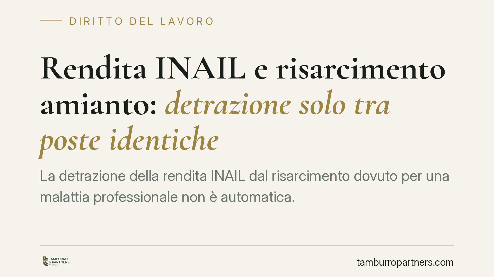

Rendita INAIL e risarcimento amianto: detrazione solo tra poste identiche
La detrazione della rendita INAIL dal risarcimento dovuto per una malattia professionale non è automatica. Può operare solo quando le poste risarcitorie sono davvero identiche, non per la semplice appartenenza alla medesima categoria di danno. Il tema torna centrale nei contenziosi per mesotelioma da amianto, dove il confronto tra quanto erogato dall'Istituto e quanto dovuto dal responsabile incide pesantemente sul quantum riconosciuto.

Il nodo: compensatio lucri cum damno
Quando un lavoratore colpito da malattia professionale (o i suoi eredi) ottiene un risarcimento dal datore o dal committente, si pone il problema di evitare duplicazioni. Il danneggiato non deve arricchirsi ricevendo due volte il ristoro dello stesso pregiudizio. È il principio della *compensatio lucri cum damno*: dal danno si sottrae il vantaggio che deriva dal medesimo fatto illecito.
Le Sezioni Unite della Cassazione, con le sentenze 11 maggio 2018, nn. 12564, 12565, 12566 e 12567, hanno fissato i criteri. La detrazione è ammessa solo se il beneficio ricevuto dal danneggiato (qui la prestazione INAIL) ha funzione risarcitoria e copre lo stesso identico pregiudizio liquidato a titolo civilistico. Dove manca questa coincidenza, non si detrae.
Cosa indennizza davvero la rendita INAIL
Qui si annida l'errore più frequente. La rendita INAIL non è una posta unica e indistinta. Ai sensi dell'art. 13 del D.Lgs. 38/2000, essa indennizza due componenti distinte:
- una quota riferita al danno biologico, che per definizione è danno non patrimoniale (lesione dell'integrità psico-fisica);
- una quota di natura patrimoniale, collegata alla riduzione della capacità lavorativa e, quindi, del reddito.
Il Testo Unico INAIL (D.P.R. 1124/1965) regola il sistema e, agli artt. 10 e 11, la surroga dell'Istituto verso il terzo responsabile. Confondere queste componenti porta a detrazioni sbagliate: detrarre la quota patrimoniale della rendita dal danno biologico liquidato in sede civile, o viceversa, viola il principio di omogeneità.
Categoria non significa posta identica
Il punto qualificante dell'orientamento è proprio questo. Non è sufficiente che due voci appartengano alla stessa categoria (ad esempio entrambe "danno non patrimoniale") perché scatti la detrazione. Occorre che si tratti della stessa posta, cioè del medesimo pregiudizio concreto.
Il danno biologico indennizzato dall'INAIL con criteri tabellari standardizzati non coincide necessariamente con il danno biologico liquidato dal giudice civile secondo la personalizzazione del caso. La detrazione va operata voce per voce, confrontando ciò che effettivamente si sovrappone. Ogni automatismo è da respingere.
Rendita ai superstiti e danno iure proprio
Nei casi di decesso — tipici del mesotelioma — occorre distinguere. La rendita ai superstiti prevista dall'art. 85 del D.P.R. 1124/1965 ha presupposti e beneficiari propri. Non si sovrappone automaticamente al danno iure proprio che gli eredi fanno valere per la perdita del congiunto, che è pregiudizio autonomo, diverso da quello sofferto in vita dal lavoratore.
Serve quindi cautela: la prestazione erogata ai superstiti non può essere detratta sic et simpliciter dal danno che gli eredi subiscono in proprio, salvo verifica di effettiva omogeneità.
Il risvolto penale: la costituzione di parte civile
Nei procedimenti penali per malattie da amianto (ipotesi di lesioni o omicidio colposo, spesso con contestazioni ex art. 589 c.p.), gli eredi si costituiscono parte civile. In quella sede il giudice può liquidare una provvisionale o rinviare il quantum alla sede civile.
Anche qui vale la regola dell'omogeneità: la provvisionale e il risarcimento devono tenere conto di quanto già erogato dall'INAIL solo per le poste effettivamente coincidenti. La difesa degli imputati tende a invocare detrazioni ampie; la parte civile ha interesse a far valere la non omogeneità tra prestazione assistenziale e danno civilistico.
Patologie a lunga latenza e prescrizione
Il mesotelioma ha latenza che può superare i trent'anni. Il termine di prescrizione dell'azione risarcitoria non decorre dall'esposizione, ma dal momento in cui il danneggiato ha avuto — o avrebbe dovuto avere con l'ordinaria diligenza — consapevolezza dell'origine professionale della malattia. È un profilo decisivo: una prescrizione eccepita e accolta chiude ogni discorso sul merito.
Cosa fare in concreto
- Scomponete la rendita INAIL nelle sue componenti (biologica non patrimoniale e patrimoniale) prima di quantificare il residuo risarcibile.
- Confrontate le poste una per una: opponetevi a detrazioni fondate sulla sola appartenenza alla stessa categoria di danno.
- Distinguete il danno iure proprio degli eredi dalla rendita ai superstiti ex art. 85 D.P.R. 1124/1965.
- Documentate la data di consapevolezza dell'origine professionale per difendervi dall'eccezione di prescrizione.
- Coordinate sede penale e civile: valutate la costituzione di parte civile e la richiesta di provvisionale tenendo presente il regime della detrazione.
Disclaimer
Contributo informativo a cura di Tamburro & Partners - Avv. Giuseppe Tamburro. Non costituisce parere legale.
Ogni storia di lavoro ha i suoi tempi.
Se gestisci HR e vuoi un confronto su contenzioso, ispezioni o licenziamenti, scrivi allo studio. Ti rispondiamo entro un giorno lavorativo.